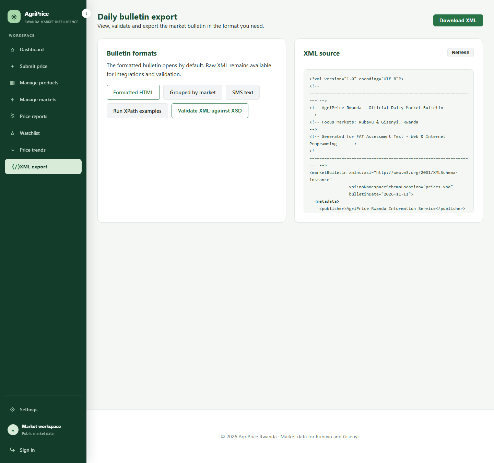
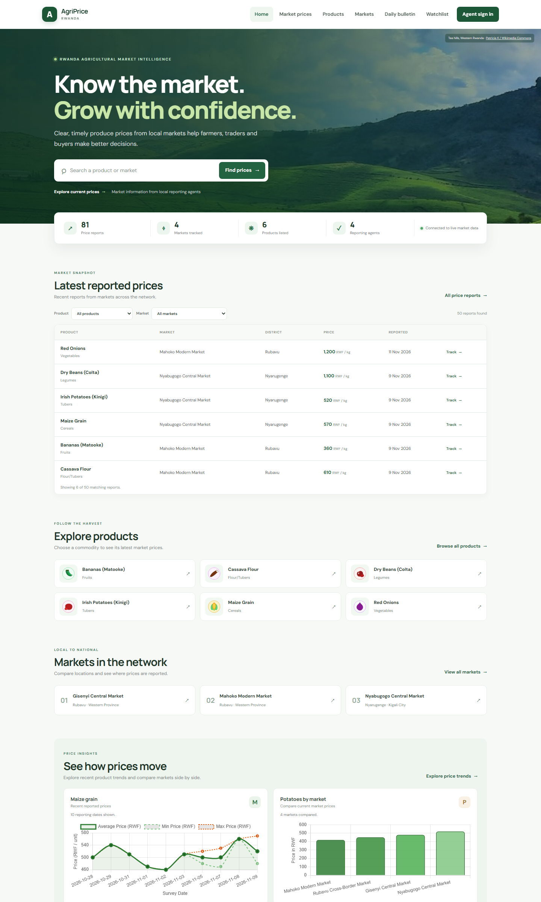
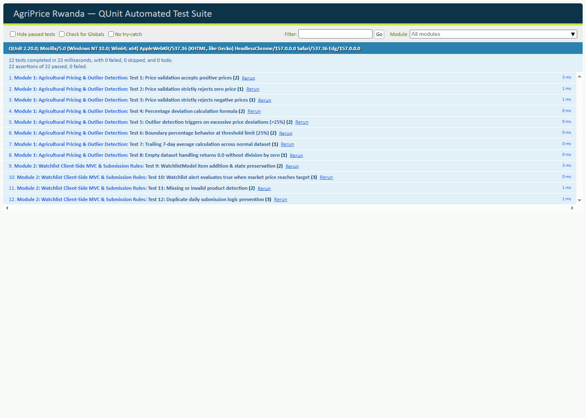
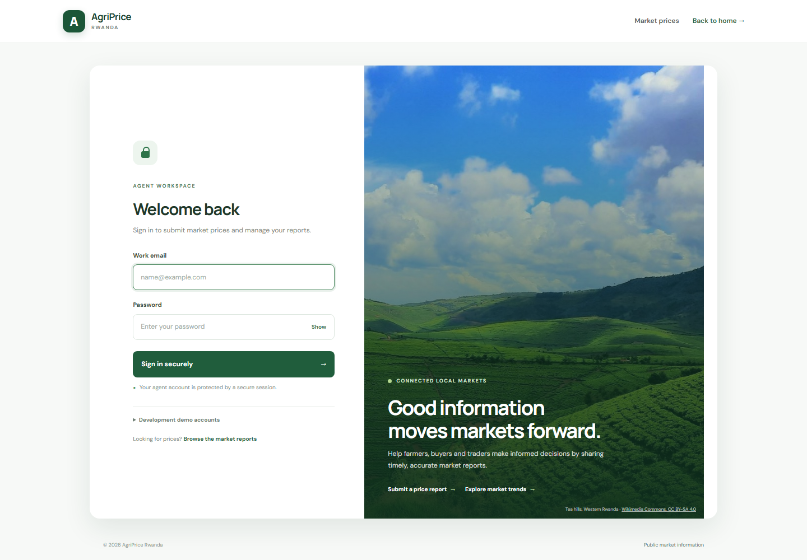
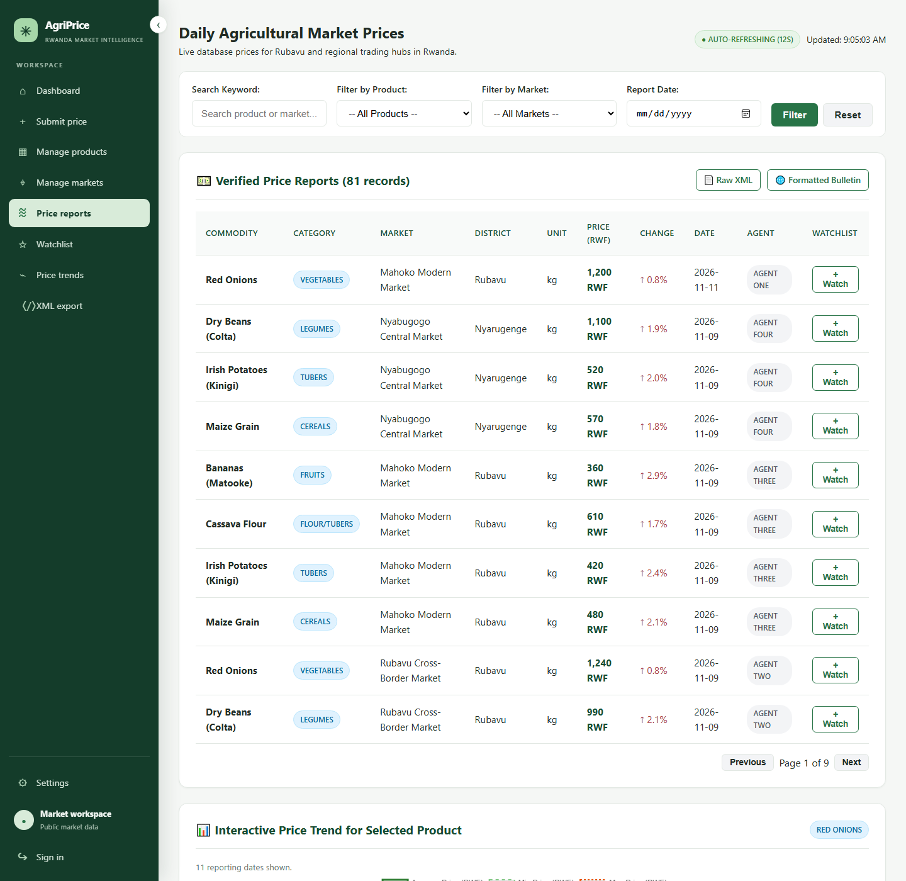
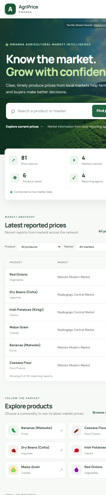

School of Science and Technology Department of Software Engineering
FAT Project Report
AgriPrice Rwanda Agricultural Market Price Information System
Module: Advanced Web and Internet Programming
Lecturer: NTIRENGANYA Jean Paul
Academic year: 2026–2027 Class: Y4 Program: Day
Project: Market price information system for Rubavu and Gisenyi
Date of examination/presentation: 20 November 2026
Team member name(s) and ULK roll number(s): complete with actual registered information before printing.
Prepared for the Final Assessment Test
AgriPrice Rwanda · FATCover
1. Introduction
Farmers and produce traders in Rubavu and Gisenyi need current market information when deciding where and when to sell or buy. AgriPrice Rwanda provides public price and trend views and an authenticated workspace where market agents submit and correct reports. Reports are stored in MySQL and can be published in HTML, XML, grouped-market and SMS-style bulletin formats.
2. Tools and technologies
Layer
Technology
Use
IDE / project
Eclipse Enterprise Java, Dynamic Web Project
Project development and Tomcat server integration
Server / API
Java Servlets (`javax.servlet`) on Tomcat 9
Authentication, validation, CRUD, JSON and XML endpoints
Persistence
MySQL 8, JDBC, Connector/J, PreparedStatement
Relational data access through DAO classes
Browser
HTML5, CSS3, vanilla JavaScript, Fetch and XMLHttpRequest
Responsive UI and asynchronous JSON requests
Data / charts / tests
Gson, XML, XSD, XPath, XSLT, Chart.js, QUnit
JSON serialization, bulletins, visualizations and unit tests
3. System architecture
Browser pages call servlet mappings declared in WEB-INF/web.xml. Servlets validate requests and delegate SQL work to DAOs. DAOs obtain connections from DatabaseConnection and bind query values using prepared statements. The database contains the persistent application records.
AgriPrice Rwanda application architecture
ULK · Software Engineering · Y4Introduction and architecture
4. Database design
The schema defines six related InnoDB tables: agents, markets, products, price_reports, audit_log and watchlist. Foreign keys preserve relationships. Price reports enforce a positive price and the unique key (market_id, product_id, report_date). Query values are bound with PreparedStatement; JDBC resources use try-with-resources.
Database entities and foreign-key relationships
schema.sql creates the database, tables and local application user. seed.sql supplies four fictional agent accounts, three displayed markets, six products and seeded price reports across 16 dates. Seed agent names, `.test` email addresses and phone placeholders are synthetic; stored passwords are salted PBKDF2 hashes.
Clean-database setup:schema.sql contains DROP DATABASE because the deliverable must rebuild an empty assessment database. Run it only on a clean/disposable database, then run seed.sql. A destructive clean restore was not run over the existing development database; its existing price reports were preserved.
5. Roles and business rules
Public visitors browse and filter market prices, products and markets, use a session-backed watchlist and view trends.
Agents authenticate against salted password hashes. Session checks and ownership rules protect report submission, correction and deletion.
Prices must be positive; inactive or unknown products, invalid units and malformed inputs are rejected.
One product/market/date submission is enforced in application code and by a database unique key.
Price deviations beyond outlier.threshold are rejected against the prior seven-day average. Price and audit rows share one transaction.
AgriPrice Rwanda · FATDatabase and rules
6. XML, XSD, XPath and XSLT
GET /export/prices selects the latest report date and builds a nested XML bulletin from MySQL. A requested date can be supplied as ?date=YYYY-MM-DD. Raw XML is available using ?format=xml.
The XSD constrains positive decimal prices, XML date types, enumerated market names and units (kg, piece, sack, bunch) and a required non-empty agent. The Java validation runner accepted a valid sample and rejected invalid negative price, market name, unit and date variants.
?format=xpath runs these five expressions against the current database-generated bulletin and shows matching values. XSLT supports the formatted HTML bulletin, grouping by market, and plain-text SMS lines.

XML export page: raw source, format links and schema validation
7. HTTP and caching
Live price, dashboard and trend JSON endpoints return Cache-Control: no-store. Bulletin representations have representation-specific ETags, Last-Modified and revalidation headers. A repeated request with a matching ETag returned 304. Invalid filter input returned 400 and an unauthenticated report write returned 401.
The assessment instance uses local HTTP. Production agent login must use HTTPS/TLS and a Secure session cookie. The session cookie is HttpOnly. JavaScript-readable market and language preference cookies use expiry and SameSite=Lax; they are intentionally not HttpOnly because the browser scripts need to read them.
Assessment evidence: The ETag/304 behavior was verified programmatically. A DevTools Network screenshot with headers and timings still needs to be captured by the candidate during rehearsal.
ULK · Advanced Web and Internet ProgrammingXML and HTTP
8. AJAX, client-side MVC and charts
Product and market filters request JSON without reloading the price page. The price list refreshes every 5 seconds. Agent price submissions use Fetch POST and refresh the agent's recent-submission table after success. XMLHttpRequest is exercised by the live market snapshot.
The watchlist separates watchlist-model.js, watchlist-view.js and watchlist-controller.js. The model owns item state and target calculations, the view renders DOM and feedback, and the controller coordinates API calls. Items persist in MySQL; watched prices and target status refresh every 15 seconds while the page is visible.
Line chart: historical average, minimum and maximum prices.
Bar chart: selected commodity comparison by market.
Pie chart: report counts grouped by market.

Public homepage with live totals, searchable market information and latest reports
9. Test results
The QUnit browser runner completed 12 tests and 22 assertions with zero failures. The tests cover price positivity, percentage deviation, threshold boundaries, averages, watchlist model alerts and duplicate detection. The QUnit page was run in Edge headless during this implementation.

QUnit 2.20 result captured in Edge headless
TDD evidence gap: The repository does not show a failing-first test commit or screenshot. The passing suite is verified, but failing-first TDD evidence must be provided by the actual project team; it cannot be reconstructed retrospectively.
AgriPrice Rwanda · FATBrowser features and tests
10. Screens and runtime verification
The pages below were served by the running Tomcat 9 project. The public homepage loads prices, products, markets and dashboard totals from the existing JSON APIs. The agent login/session/status/logout path was exercised with a seeded agent account. An unknown product and an extreme outlier were rejected without inserting a report. No successful report insert was performed during final checks so the existing report rows remained intact.

Agent authentication page

Public price reports and product/market filters

Homepage narrow viewport rendering; separate device emulation is still recommended before presentation
11. Limits and remaining presentation preparation
Rebuild from schema.sql and seed.sql on a disposable MySQL instance before the live assessment; the existing working database was not dropped.
Capture actual browser DevTools evidence for at least four requests, a conditional 304, response headers and timing.
Provide authentic failing-first TDD evidence if the team followed that process.
Complete actual team names, ULK roll numbers and signed contribution form. The repository currently records one configured Git author; no additional contributors are invented in this report.
12. Individual contribution table
Actual member name
ULK roll number
Work completed
Commit IDs / signature
Confirm configured author “Delphin” and enter official name
Complete
Confirm actual contribution from Git history
See docs/git-history.txt; sign
Only add real members
Complete
Record verified work
Add verified commits; sign
13. Conclusion
The agent dashboard has its own sidebar layout. Management tools use horizontal navigation and page-specific layouts for the product catalog, market directory, price explorer, watchlist, report form, trend charts, XML console and preferences. Product management accepts optional JPEG, PNG, or GIF photos up to 2 MB with the relative image path saved in MySQL, and the catalog uses the same image-led card grid as the market directory. Duplicate names return conflict messages. Products used in historical reports are archived on removal, while referenced markets cannot be deleted; saved history remains intact. The markets directory and homepage market cards use locally bundled photos for each displayed seeded market (Gisenyi, Rubavu and Mahoko), with a Kigali market hero photo; authors, sources and licenses are listed in docs/PRODUCT_IMAGE_CREDITS.md. AgriPrice Rwanda implements the core public price-information and agent-reporting workflow with Servlets, JDBC/MySQL, Fetch/XHR, JSON, client-side MVC, QUnit, Chart.js and XML/XSD/XPath/XSLT. Core pages and endpoints run on the current Tomcat/MySQL instance. The report identifies evidence that must still be supplied by the actual team rather than claiming it exists.
Kigali Independent University ULK · Y4Results, contributions and conclusion